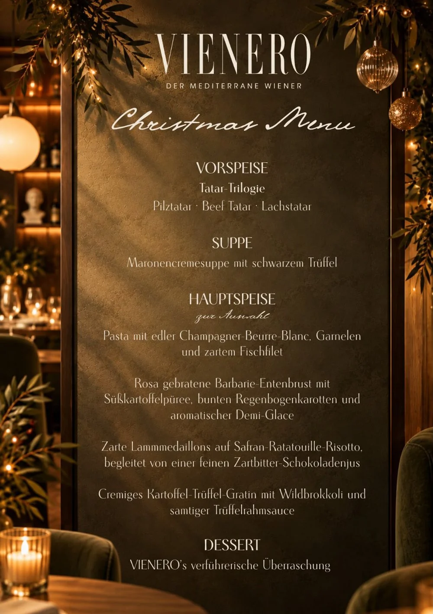

Christmas Dinner in Vienna
Spending Christmas in Vienna? While many kitchens close on Christmas Eve, we light the candles. On 24 and 25 December VIENERO serves a festive four course Christmas menu, right by the Stadtpark and a short walk from St. Stephen's Cathedral.
The Christmas menu

99.99 euros per person. On 24 and 25 December we are open as usual from noon with our regular menu, and in the evening from 5 pm to 10 pm we serve the Christmas menu. When you book, please tell us if someone at your table eats vegetarian.
Christmas by the Stadtpark
Velvety chestnut soup scented with black truffle, duck breast with a glossy demi glace or lamb on saffron risotto, and a sweet surprise to finish. Add a glass of Austrian wine or champagne and let the evening unfold without lifting a finger.
VIENERO sits at Dr.-Karl-Lueger-Platz on the Ringstrasse, with the U3 Stubentor station at the door and the Christmas markets of the old town just a few minutes away. We have an English menu and a team that is happy to help. Staying until New Year? See our New Year's Eve dinner with DJ.
Questions
Are restaurants open on Christmas Eve in Vienna?
Many restaurants in Vienna close on 24 December. VIENERO is open on Christmas Eve and Christmas Day and serves a festive Christmas menu from 5 pm to 10 pm.
What is on the Christmas menu at VIENERO?
A trilogy of tartare, chestnut cream soup with black truffle, a choice of four main courses and a festive dessert.
How much is Christmas dinner at VIENERO?
99.99 euros per person for four courses.
Can I order from the regular menu on 24 and 25 December?
Yes, at lunchtime. We are open as usual from noon with our regular menu, and in the evening from 5 pm we serve the Christmas menu.
Is there a vegetarian option?
Yes, the creamy potato and truffle gratin with wild broccoli and truffle cream sauce. Please let us know when you book.
How do I book?
Book online, email Reservierung@vienero.at or call +43 1 913 70 05. Tables on Christmas Eve go quickly, so we recommend booking early.
Visit us
24 and 25 December
Open from noon, regular menu
Christmas menu 5 pm to 10 pm
Address
Dr.-Karl-Lueger-Platz 3
1010 Vienna, by the Stadtpark
U3 Stubentor at the door
Google Maps